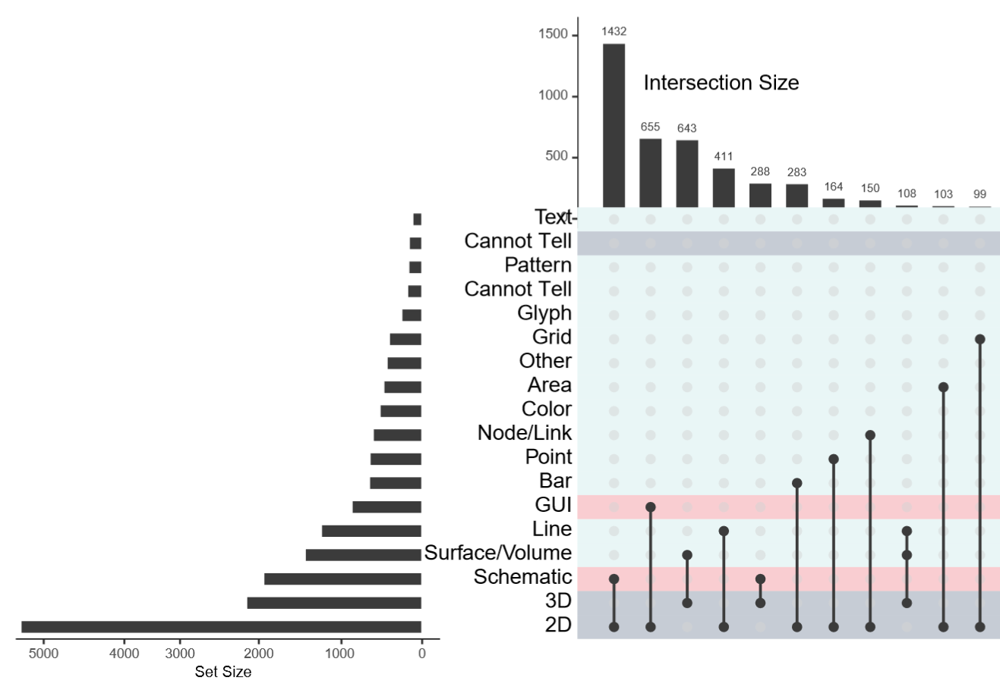

Not As Easy As You Think - Experiences and Lessons Learnt from Creating a Visualization Image Typology


Authors. Jian Chen, Petra Isenberg, Robert S Laramee, Tobias Isenberg, Michael Sedlmair, Torsten Mōller, Han-Wei Shen
Venue. arXiv (2022) Preprint
Type. Preprint
Abstract. We present and discuss the results of a two-year qualitative analysis of images published in IEEE Visualization (VIS) papers. Specifically, we derive a typology of 13 visualization image types, coded to distinguish visualizations and several image characteristics. The categorization process required much more time and was more difficult than we initially thought. The resulting typology and image analysis may serve a number of purposes: to study the evolution of the community and its research output over time, to facilitate the categorization of visualization images for the purpose of teaching, to identify visual designs for evaluation purposes, or to enable progress towards standardization in visualization. In addition to the typology and image characterization, we provide a dataset of 6,833 tagged images and an online tool that can be used to explore and analyze the large set of tagged images. We thus facilitate a discussion of the diverse visualizations used and how they are published and communicated in our community.